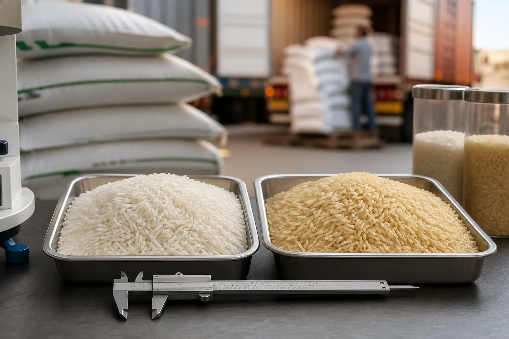
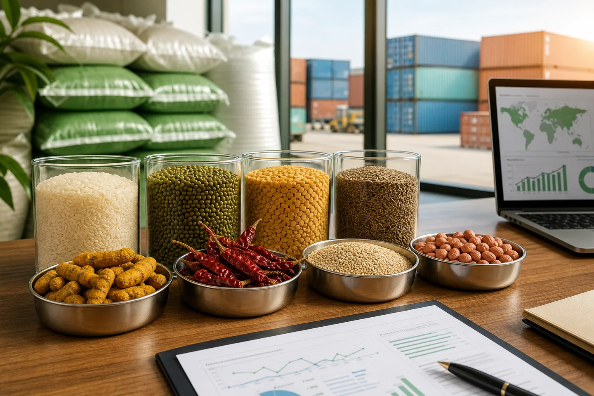
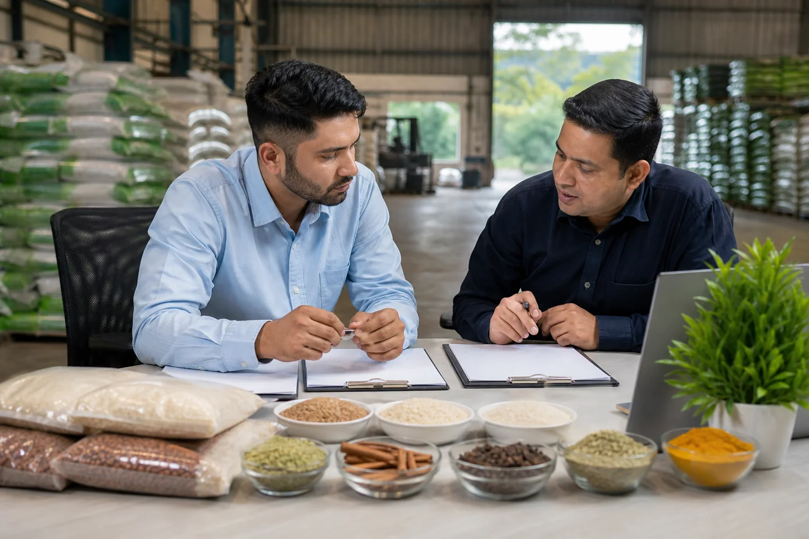
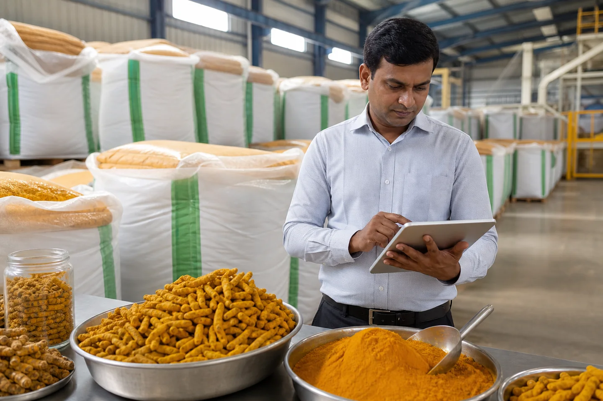

වෙළඳපල බුද්ධිය සහ
වෙළඳ තීක්ෂ්ණ බුද්ධිය
JFT Agro හි අපනයන කණ්ඩායම විසින් ලියන ලද ඉන්දියානු කෘෂිකාර්මික භාණ්ඩ පිළිබඳ ජාත්යන්තර ගැනුම්කරුවන් සඳහා ගැඹුරු මාර්ගෝපදේශ, වෙළඳපල විශ්ලේෂණය සහ නියාමන යාවත්කාලීන කිරීම්.

1121 එදිරිව 1509 බාස්මතී සහල්: 2026 දී ඔබ ආනයනය කළ යුතු ප්රභේද මොනවාද?
ගෝලීය වශයෙන් ඉන්දියානු බාස්මතී අපනයනයේ ප්රභේද දෙකක් ආධිපත්යය දරයි. දෙකම දිගු-ධාන්ය, ඇරෝමැටික සහ වාරික වේ - නමුත් ඒවා විවිධ වෙලඳපොලවල්, විවිධ ගැනුම්කරුවන් සහ විවිධ මිල ගණන් වලට සේවය කරයි. ඔබේ බහාලුම් ඇණවුම තැබීමට පෙර ඔබ දැනගත යුතු දේ මෙන්න.

කෘෂි ආනයනකරුවන් සඳහා ආහාර බහාලුම් පැටවීමේ පිරික්සුම් ලැයිස්තුව
පිරිසිදුකම, වියළි බව, ගන්ධය, පළිබෝධකයන්, ඇසුරුම්, පැටවුම් වාර්තා, මුද්රා සහ VGM ආවරණය වන සහල්, කුළුබඩු, ධාන්ය වර්ග සහ ධාන්ය සඳහා පූර්ව-පූරණය බහාලුම් පිරික්සුම් ලැයිස්තුවක්.

ආහාර ආනයනය සඳහා විශ්ලේෂණ සහතිකයක් සමාලෝචනය කරන්නේ කෙසේද
ආහාර විශ්ලේෂණ සහතිකයක් සමාලෝචනය කරන්නේ කෙසේදැයි ඉගෙන ගන්න: ගොඩක් අනන්යතාවය, නියැදීම, ක්රම, ඒකක, සීමාවන්, රසායනාගාර විෂය පථය සහ පිරිවිතරයෙන් බැහැර පාලන.

කෘෂි භාණ්ඩ මිලදී ගැනීමේ පිරිවිතරයක් ලියන්නේ කෙසේද?
සහල්, කුළුබඩු, ඇට වර්ග සහ ධාන්ය වර්ග ආවරණය වන පරිදි ප්රායෝගික ගැනුම්කරු අච්චුවක්, ඉවසීම, පරීක්ෂණ, ඇසුරුම් කිරීම, නියැදීම, ලේඛන සහ පිළිගැනීමේ නීති.

ඉන්දියාවේ සිට අප්රිකාවට භාණ්ඩ අපනයනය කරන්නේ කෙසේද: ලේඛන, ගෙවීම් නියමයන් සහ නොමිලේ සැකිලි සහිත සම්පූර්ණ මාර්ගෝපදේශය
ඉන්දියාවේ සිට අප්රිකාව දක්වා පියවරෙන් පියවර අපනයන මාර්ගෝපදේශය - අවශ්ය සියලුම ලියකියවිලි, ගෙවීම් නියමයන්, නයිජීරියාව, කෙන්යාව, ඝානාව, ටැන්සානියාව සඳහා රට-විශේෂිත අවශ්යතා සහ නොමිලේ බාගත හැකි Proforma ඉන්වොයිසිය, වාණිජ ඉන්වොයිසිය, සහ ඇසුරුම් ලැයිස්තු සැකිලි...

ඉන්දියානු කහ ඇඟිලි අපනයනය 2026: සේලම් එදිරිව නිසාමාබාද්, ශ්රේණි සහ මිල
ලෝකයේ කහවලින් 75%ක් වගා කරන්නේ ඉන්දියාවයි. Salem vs Nizamabad ශ්රේණි, curcumin පිරිවිතර, සහ 2026 FOB මිණුම් සලකුණු...

Red Chilli Export India 2026: Teja S17, Guntur Grades & FOB මිල ගණන්
Teja S17 vs Guntur Sannam vs Bydagi — ඔබේ වෙළඳපොළ සඳහා කුමන ශ්රේණියද? Scoville ඒකක, ASTA වර්ණය සහ සුඩාන සායම් පරීක්ෂාව...

Green Mung Beans Export India 2026: ශ්රේණි, ප්රමාණ සහ ගනන්කරු මාර්ගෝපදේශය
තද අංකුර ශ්රේණිය එදිරිව කුඩා ඉවුම් පිහුම් ශ්රේණිය. ප්රරෝහණ අනුපාතය පරීක්ෂා කිරීම, 2026 FOB මිල ගණන්, චීනය සහ දකුණු කොරියාවේ වෙලඳපොලවල්...

අපනයනය සඳහා IR-64 තම්බන ලද සහල්: ශ්රේණි, වෙළඳපල සහ FOB මිල 2026
IR-64 5% එදිරිව 25% කැඩී - බටහිර අප්රිකාව, ගල්ෆ් සහ අග්නිදිග ආසියාව ගැනුම්කරුවන්ට සැබවින්ම අවශ්ය දේ. ඇඹරුම් සම්මතයන් සහ 2026 FOB මිණුම් සලකුණු...

නයිජීරියාවට සහ බටහිර අප්රිකාවට ඉන්දියානු සහල් ආනයනය කරන්නේ කෙසේද: සම්පූර්ණ මාර්ගෝපදේශය
M ආකෘති පත්ර අවශ්යතා, NAFDAC ලියාපදිංචිය, SGS පරීක්ෂාව, Cotonou ප්රතිඅපනයන මධ්යස්ථානය - සම්පූර්ණ නයිජීරියාව/බටහිර අප්රිකාව ආනයන මාර්ගෝපදේශය...

ශ්රී ලංකාවට සහ බංග්ලාදේශයට ඉන්දියානු සහල් අපනයනය: නියමයන් සහ සැපයුම්
කෙටි මුහුදු මාර්ග වාසිය (දින 3-6), රට අනුව කැමති ප්රභේද, BSTI අනුමැතිය සහ ගෙවීම් නියම මාර්ගෝපදේශය...

කෙන්යාවට සහ නැගෙනහිර අප්රිකාවට ඉන්දියානු කෘෂිකාර්මික ආනයනය කිරීම: රාජකාරි සහ ලේඛන
EAC 75% සහල් ගාස්තු, KEBS PVoC සහතිකය, මොම්බාසා වරායේ වාසය කරන කාලය සහ ගොඩබිම් පිරිවැය ගණනය කිරීම...

ඉන්දියානු අපනයන ප්රොෆෝමා ඉන්වොයිසියක් කියවන්නේ කෙසේද: සම්පූර්ණ මාර්ගෝපදේශය
PI හි සෑම අංශයක්ම පැහැදිලි කර ඇත - නිෂ්පාදන විස්තරය, HS කේත, බැංකු විස්තර රතු කොඩි, සහ PI එදිරිව වාණිජ ඉන්වොයිස් වෙනස...

ඉන්දියානු සහල් සඳහා ආනයන බදු 2026: රටින් රට තීරුබදු මාර්ගෝපදේශය
එක්සත් අරාබි එමීර් රාජ්යය (0% CEPA), එක්සත් රාජධානිය (0% DCTS), කෙන්යාව (75%), නයිජීරියාව (110%), EU, බංග්ලාදේශය සඳහා තීරුබදු අනුපාත - ඉඩම් පිරිවැය ගණනය කිරීමේ උදාහරණය සමඟ...
APEDA ලියාපදිංචිය පැහැදිලි කර ඇත: ආනයනකරුවන් සඳහා එයින් අදහස් කරන්නේ කුමක්ද?
APEDA RCMC එදිරිව IEC, මාර්ගගතව සත්යාපනය කරන්නේ කෙසේද, බාස්මතී සඳහා BREAC සහතිකය සහ ඇයි APEDA = ඉන්දියාවෙන් සහල් අපනයනය කළ නොහැක...
ඉන්දියානු කෘෂි අපනයන සඳහා SGS සහ තෙවන පාර්ශ්ව පරීක්ෂණය
පැටවීමේදී SGS පරීක්ෂා කරන්නේ මොනවාද, එය ආවරණය නොකරන දේ, ඔබේ කොන්ත්රාත්තුවේ එය උපදෙස් දෙන්නේ කෙසේද, සහ සහතිකය කියවන්නේ කෙසේද...

ඉන්දියානු ආහාර ආනයනය සඳහා ණයවර ලිපිය: පියවරෙන් පියවර මාර්ගෝපදේශය
8-පියවර LC ක්රියාවලිය, පෙනීම එදිරිව භාවිතය එදිරිව තහවුරු කරන ලද LC, කෘෂි LC වෙළඳාමේ වඩාත් පොදු විෂමතා සහ ප්රධාන කෙටුම්පත් ඉඟි...

පැටවීමේ බිල්පත පැහැදිලි කර ඇත: ඉන්දියාවෙන් පළමු වරට ආනයනය කරන්නන් සඳහා මාර්ගෝපදේශය
BL හි කාර්යයන් තුනක්, මුල් එදිරිව ටෙලෙක්ස් නිකුතුව, පිරිසිදු එදිරිව වගන්ති සහිත BL, සහ රේගු නිෂ්කාශනය සඳහා එය භාවිතා කරන්නේ කෙසේද ...

ඉන්දියාව එදිරිව තායිලන්තය සහල් 2026: ඔබේ වෙළඳපොළට වඩා හොඳ කුමක්ද?
විවිධත්වය සංසන්දනය කිරීම, 2026 මිල පරතරය ($50–80/MT), ගුණාත්මක වෙනස්කම්, සහ කුමන ගමනාන්ත වෙළඳපොළට ගැලපෙන සම්භවයද...

2026 දී ආනයනය කිරීමට හොඳම ඉන්දියානු කෘෂි භාණ්ඩ 10
බාස්මතී සහ psyllium සිට moringa සහ toor dal දක්වා — හොඳම මිල වාසිය, ඉල්ලුම වර්ධනය සහ මූලාශ්ර පහසුව සහිත භාණ්ඩ 10...

විශ්වසනීය ඉන්දියානු කෘෂි අපනයනකරුවෙකු තෝරා ගන්නේ කෙසේද: ගැනුම්කරුගේ පිරික්සුම් ලැයිස්තුව
IEC, APEDA, GSTIN, MCA මාර්ගගතව සත්යාපනය කරන්න — ඊට අමතරව ඔබ කිසිවක් ගෙවීමට පෙර අධි අවදානම් සැපයුම්කරුවෙකු සංඥා කරන රතු කොඩි 6...

Psyllium Husk Export from India 2026: ශ්රේණි, මිල සහ ගැන මාර්ගෝපදේශය
ගෝලීය සයිලියම් සැපයුමෙන් 85% පාලනය කරන්නේ ඉන්දියාවයි. මෙම මාර්ගෝපදේශය 85% සිට 99% දක්වා සෑම ශ්රේණියක්ම ආවරණය කරයි, 2026 FOB මිල මිණුම් සලකුණු, ප්රධාන පිරිවිතර, සහ සත්යාපිත ඉන්දියානු අපනයනකරුවෙකුගෙන් සෘජුවම මූලාශ්ර ගන්නේ කෙසේද...

ඉන්දියානු දුරු (ජීරා) මිල ඉදිරි දැක්ම 2026: ආනයනකරුවන් දැනගත යුතු දේ
2021 සහ 2023 අතර දුරු මිල රුපියල් 20,000 සිට 65,000 දක්වා ක්වින්ටල් එකක් දක්වා ඉහළ ගියේය - පසුව නැවත පහළ ගියේය. මෙම විශ්ලේෂණය 2026 මිල ඉදිරි දැක්ම, ශ්රේණියේ සැසඳීම්, FOB මිණුම් සලකුණු සහ කොන්ත්රාත්තු කළ යුත්තේ කවදාද යන්න ආවරණය කරයි...

ගෝලීය කුළුබඩු වෙළඳාම: කහ මාර්කට් ඉදිරි දැක්ම 2026
කර්කියුමින් බහුල ඉන්දියානු කහ සඳහා යුරෝපීය ඉල්ලුම ඉහළ යද්දී, ආනයනකරුවන් දැඩි සැපයුම් දාමයකට මුහුණ දී සිටිති. මෙන්න අපේ...
මාතෘකාව අනුව බ්රවුස් කරන්න
ලබාගන්න කර්මාන්තශාලා-සෘජු මිලකරණය
ඉන්දියාවේ ස්ටාර් එක්ස්පෝට් හවුස් එකෙන්
Trade samples on request. Proforma Invoice Timing is confirmed after commercial review. APEDA documentation available for verification. ISO 9001:2015 documentation available for verification.